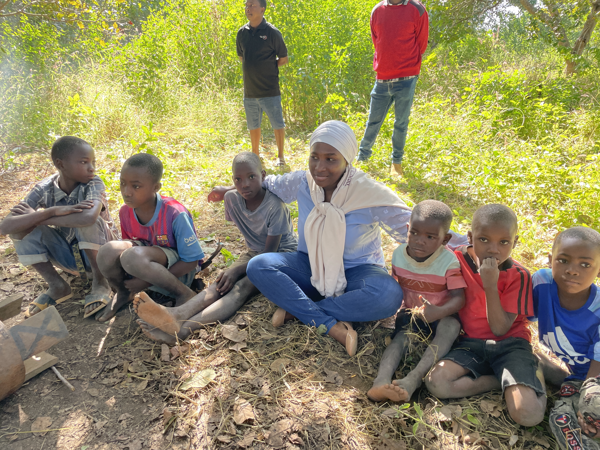
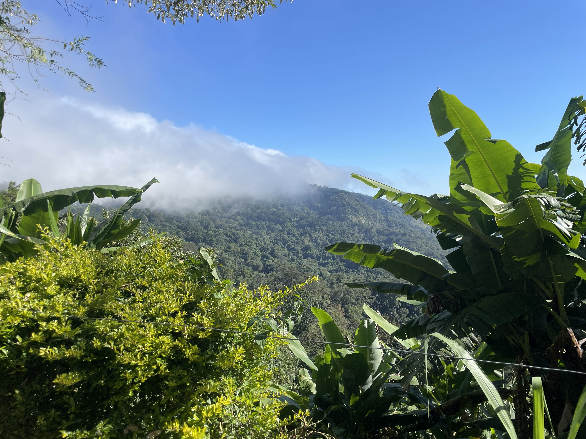
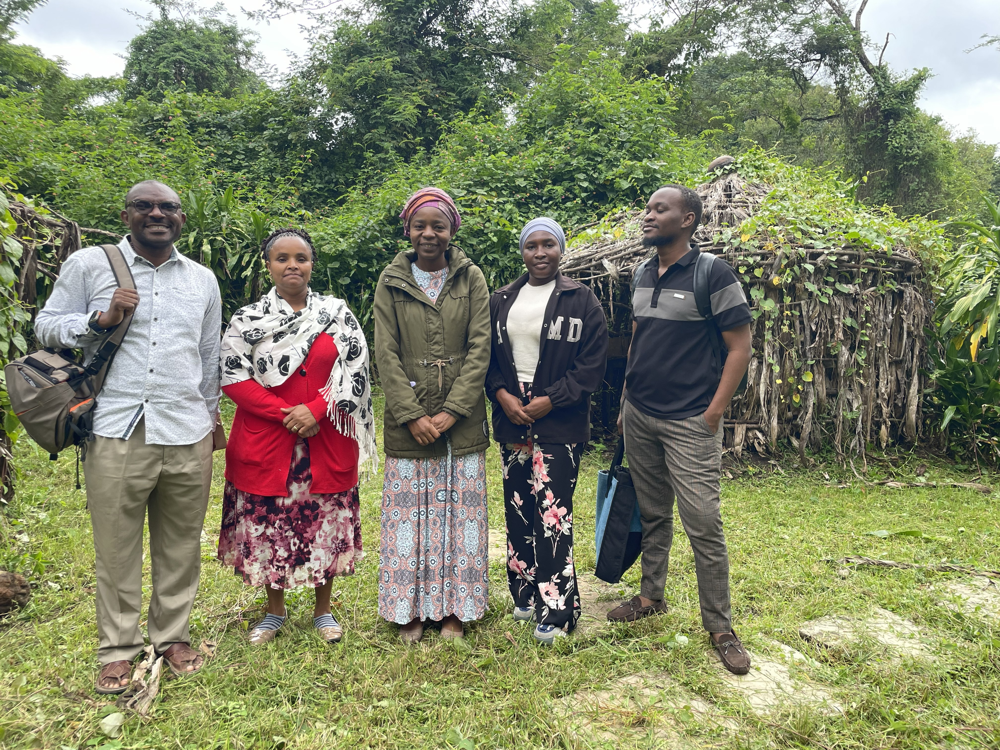
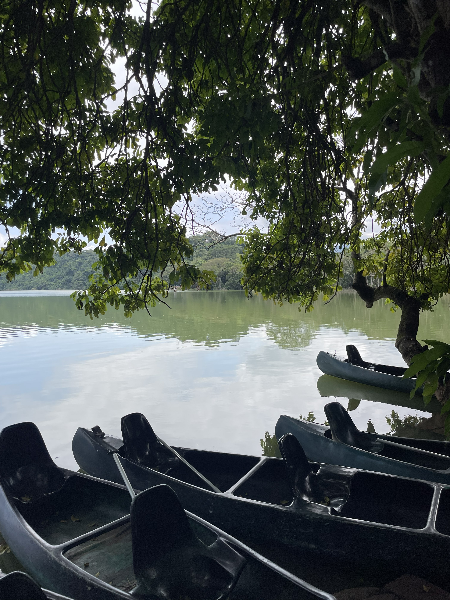

Featured Heritage Archive
The Spirit of
The Makonde
Witness the traditional dance ceremony in Newala. An unedited journey into the heart of Mtwara's living history.
Cultural Shorts

Kwizu Mountains

Makumira Archives

Nature Meets Culture

Zakia Mpodi @ Duluti
Sacred Ceremonies
Land & Lineage
Ancestral Knowledge
Digital Archives
Cartographic Heritage
Navigate the geographic origins of traditional practices.
SCL MUSEUM
SHIMULIMULI COMPANY LIMITED
112+
Films Archived
4K
Resolution